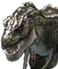
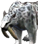
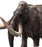

หน้าแรก › สัตว์และการต่อสู้
 สัตว์ป่า ใช้ได้
สัตว์ป่า ใช้ได้
นิสัยสัตว์ เลเวลตามเกาะ ฝูงและจ่าฝูง นักล่าไล่ล่าเหยื่อ ท่าทาง/การนอน และของที่ได้จากการแล่ซาก
บางหัวข้อในหน้านี้ยังไม่เสร็จ
ทุกเกาะมีไดโนเสาร์และสัตว์ยุคก่อนประวัติศาสตร์อาศัยอยู่เป็นฝูง บางตัวไล่ตีเราทันทีที่เห็น บางตัวหนี บางตัวไม่สนจนกว่าจะโดนตี สัตว์มีเลเวลตามเกาะ นอนตอนกลางคืน ล่ากันเองให้เห็น และเมื่อตายจะทิ้งซากให้แล่เอาเนื้อ หนัง และกระดูก



ทำอะไรได้บ้าง
- ล่าสัตว์เอาซาก แล่เป็นวัตถุดิบ (ดู การต่อสู้)
- จับสัตว์ไปเลี้ยง (ดู การจับสัตว์)
- ท้าจ่าฝูงประจำเกาะ
- ดูสัตว์นักล่าไล่ล่าเหยื่อ · แอบผ่านสัตว์ที่นอนหลับตอนกลางคืน
นิสัยของสัตว์ ใช้ได้
| นิสัย | ทำอะไร |
|---|---|
| ดุร้าย | เห็นเราในระยะ 8 ไทล์ → รู้ตัวใน 2.5 วินาที (จ่าฝูง 1.5) → คำรามแล้ววิ่งไล่ · ไล่ห่างจากถิ่นเกิน 32 ไทล์จะเลิก |
| เป็นกลาง | ไม่สนใจเรา จนกว่าจะโดนตี แล้วสู้กลับ |
| ขี้ตกใจ | โดนตีหรือเจอนักล่าแล้ววิ่งหนี |
- สัตว์ที่พ้นการต่อสู้ 20 วินาทีจะฟื้นเลือด 0.3% ต่อวินาที · ไทแรนโนซอรัสและอะแพโทซอรัสฟื้น 1% ต่อวินาที · อัลโลซอรัสไม่ฟื้น
เลเวลของสัตว์ ใช้ได้
- สัตว์ทั่วไปเกิดที่ เลเวลเกาะ ±5 (ต่ำสุด 1 · สูงสุด 70) · จ่าฝูง/หัวหน้าฝูงใช้เลเวลคงที่ตามตาราง
- เลือด พลังโจมตี และป้องกันโตตามเลเวลด้วยสูตรของเกมต้นฉบับ (เลือด ≈ ค่าประจำชนิด × (เลเวล + 24)²)
- สัตว์ชนิดเดียวกันต่างเลเวลจึงอึดต่างกันมาก เป็นข้อมูลจริงของเกม ไม่ใช่บั๊ก
| สัตว์ | Lv10 | Lv20 | Lv30 | Lv60 |
|---|---|---|---|---|
| แรปเตอร์ (เลือด) | 488 | 817 | — | — |
| เซเบอร์ทูธ (เลือด) | 1,053 | 1,764 | 2,656 | 6,428 |
ค่าดัชนีเกาะผันแปร ใช้ได้
บน เกาะผันแปร เลือดและพลังโจมตีของสัตว์ทุกตัว (รวมจ่าฝูง) คูณ 1 + (ค่าดัชนีแปรผัน − 1) × 0.25 · ป้ายเลเวลบนหัวไม่เปลี่ยน
| ค่าดัชนีแปรผัน | 1 | 3 | 4 | 7 | 10 |
|---|---|---|---|---|---|
| ตัวคูณ | ×1 | ×1.5 | ×1.75 | ×2.5 | ×3.25 |
ฝูงและจำนวนสัตว์ ใช้ได้
- เกาะสาธารณะมีสัตว์ราว 9 ตัวต่อพื้นที่ 64×64 ไทล์ (3 ฝูง × ฝูงละ 3 ตัว) ชนิดตามตารางของเกาะนั้น
- ทุกเกาะรักษาอย่างน้อย 3 ฝูง ฝูงละ ≥ 3 ตัว — ถ้าถูกล่าจนต่ำกว่านี้ ฝูงที่ขาดกลับมาที่จุดเดิมหลัง 3 นาที (ดุร้าย) · 2 นาที (ขี้ตกใจ) · 4 นาที (เป็นกลาง)
- เซฟเฮาส์ เกาะบทเรียน และเกาะสงบไม่ถูกเติม
- พื้นที่ที่ไม่มีใครอยู่ 30 นาทีจะพักฝูงไว้ พอมีคนกลับมาสัตว์ก็กลับมาตามจำนวนที่เหลือ
จ่าฝูง ใช้ได้
เกาะส่วนใหญ่มี จ่าฝูง ชนิดละ 1 ตัวต่อเกาะ (เช่น จ่าฝูงไทแรนโนซอรัส) ดุร้ายเสมอและไม่นอน
| เรื่อง | ค่า |
|---|---|
| เลือด | ×2.5 ของสัตว์ชนิดเดียวกัน (อย่างน้อย 2,000 + 50 × เลเวล) |
| หัวหน้าฝูงรอง | ×1.5 (อย่างน้อย 250 + 12 × เลเวล) |
| เกิดใหม่ที่จุดเดิม | 30 นาที (หัวหน้าฝูงรอง 10 นาที) |
| ตัวอย่าง | จ่าฝูงไทแรนโนซอรัส Lv60 ≈ 389,191 · อัลโลซอรัส Lv60 ≈ 96,914 · เอเลเฟนทุลัส Lv60 = 5,000 |
- ไม่มีจ่าฝูงบนเกาะเทมและเซฟเฮาส์ · บนเกาะผันแปรเลือดคูณค่าดัชนีเพิ่มอีก
นักล่าไล่ล่าเหยื่อ ใช้ได้
ในพื้นที่ที่มีผู้เล่นอยู่ สัตว์กินเนื้อนิสัยดุร้ายที่หิวจะไล่ล่าสัตว์ตัวอื่นให้เห็นจริง
- ล่าเฉพาะสัตว์เป็นกลาง/ขี้ตกใจ ต่างชนิด เลเวลไม่สูงกว่าตัวเอง · จ่าฝูงไม่ล่าและไม่ถูกล่า · สัตว์เลี้ยงของผู้เล่นไม่ถูกล่า
- เหยื่อขี้ตกใจวิ่งหนีเมื่อนักล่าเข้ามาใกล้ 8 ไทล์ · เหยื่อเป็นกลางสู้กลับ
- ฆ่าได้ → นักล่ายืนกิน 20 วินาที แล้วพักล่า 10 นาที · ไล่ไม่ทันใน 60 วินาทีจะเลิก
- ซากจากการล่าแล่ได้ แต่เนื้อเหลือครึ่งเดียว (หนัง/กระดูกครบ) · ไม่ได้ EXP/เควสเพราะเราไม่ได้ฆ่า
- ถ้าเราตีนักล่าที่กำลังล่า มันจะหันมาสู้เรา · นักล่าที่ไล่เราอยู่จะไม่เปลี่ยนไปล่าสัตว์
- ล่าพร้อมกันได้ไม่เกิน 2 คู่ต่อพื้นที่ · ความถี่ขึ้นกับความหิวของระบบนิเวศ (0.08 ตัวต่อนักล่าต่อชั่วโมง) จึงเห็นได้ไม่บ่อย · เกาะสงบไม่มีการล่า
ท่าทางและการนอน ใช้ได้
- วิ่ง: ตอนไล่หรือหนีจะใช้ท่าวิ่งจริง (ความเร็วเท่าเดิม 0.925 ไทล์/วินาที · เดิน 0.575)
- นอน: วันในเกมยาว 48 นาที แบ่งเป็นรุ่งสาง (4:30–8) · กลางวัน (8–17) · พลบค่ำ (17–21) · กลางคืน (21–4:30)
- สัตว์กลางคืน (หมาป่า เซเบอร์ทูธ ฯลฯ) ตื่นช่วงพลบค่ำ–กลางคืน · ตัวอื่นตื่นทุกช่วงยกเว้นกลางคืน
- นอกช่วงตื่น แต่ละตัวมีโอกาสหลับ 45% (สุ่มใหม่ทุกวัน) · ตัวที่หลับไม่เดิน ไม่ไล่ ไม่ล่า
- ตื่นเมื่อเราเข้าใกล้ 4 ไทล์หรือโดนตี แล้วไม่หลับซ้ำ 2 นาที · จ่าฝูงและสัตว์น้ำไม่นอน
- สะดุ้ง: โดนตีทุกครั้งเล่นท่าสะดุ้งสั้น ๆ (ภาพอย่างเดียว) · ขัดท่าที่สัตว์ง้างอยู่ได้เฉพาะคริติคอลหรือเกจสะดุดเต็ม
- คำราม: สัตว์ดุร้ายคำรามครั้งแรกที่เห็นเรา (ยืนนิ่ง ≤ 2 วินาที) ก่อนไล่ · จ่าฝูงคำรามตอนเริ่มสู้ · ตัวละ 1 ครั้งต่อ 60 วินาที · ไม่มีดาเมจ · บางชนิดไม่มีท่าคำราม (เซเบอร์ทูธ แมมมอธ อัลโลซอรัส ฯลฯ)
- มึน/ล้ม: ดู การจับสัตว์
แล่ซากและของที่ได้ ใช้ได้
- สัตว์ตายแล้วทิ้งซากไว้ 15 นาที (แล่ครั้งหนึ่งนับเวลาใหม่)
- แตะซาก → เลือกส่วนที่จะแล่ ได้ครั้งละ 1 ชิ้นจนหมด · ส่วนที่ยังไม่ได้เรียนสกิลแล่จะจางไว้
- เลเวลของที่ได้ = เลเวลสัตว์ + โบนัสสกิลการแล่เนื้อ แต่ไม่เกินเลเวลตัวละคร
| สัตว์ | ของจากซาก (จำนวนต่อซาก) |
|---|---|
| คอมพ์ซอกนาธัส | เนื้อ 1–2 · กระดูกขาสัตว์กินเนื้อ 1–2 |
| แรปเตอร์ | เนื้อ 2–3 · กระดูกขาสัตว์กินเนื้อ 1–2 · หนัง 1–2 · เขี้ยว 1 |
| ไทรเซราทอปส์ | เนื้อ 5–8 · กระดูกขา/ซี่โครงสัตว์กินพืช 2–3 · หัวกะโหลก 1 · เขา 1–2 · หนัง 2–3 |
| แมมมอธ | เนื้อ 7–10 · กระดูกขา/ซี่โครงสัตว์กินพืช 2–3 · หัวกะโหลก 1 · งา 1–2 · หนังติดขน 2–3 · ไขมัน 1–2 |
| ไทแรนโนซอรัส | เนื้อ 8–12 · กระดูกขา/ซี่โครงสัตว์กินเนื้อ 3–4 · กะโหลกขนาดใหญ่ 1 · หนัง 3–4 · เขี้ยว 1 |
- ส่วนที่พังตอนสัตว์ตายได้ของครึ่งเดียว (ไม่รวมเนื้อ) · ซากจากนักล่าได้เนื้อครึ่งเดียว
ประชากรฟื้นตัว ใช้ได้
สัตว์ที่ถูกฆ่าหรือถูกจับไม่ได้โผล่ที่เดิมทันที ประชากรของแต่ละพื้นที่ค่อย ๆ ฟื้นตามเวลา (เฉพาะตอนมีคนอยู่แถวนั้น) · ล่าจนชนิดไหนหมดพื้นที่ จะมีตัวใหม่กลับมาหลังพื้นที่เงียบ 12 ชั่วโมง · ขั้นต่ำ 3 ฝูงต่อเกาะยังคุ้มครองอยู่เสมอ
ยังไม่เสร็จ ยังไม่เสร็จ
EXP พิเศษจากจ่าฝูง ยังไม่เสร็จ
ฆ่าจ่าฝูงตอนนี้ได้ EXP เท่าสัตว์ปกติเลเวลเดียวกัน (โบนัสของจ่าฝูงยังไม่ทำ)